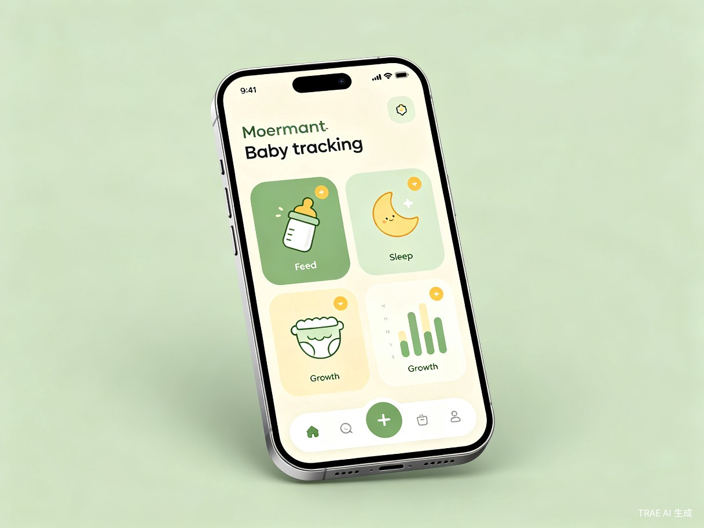
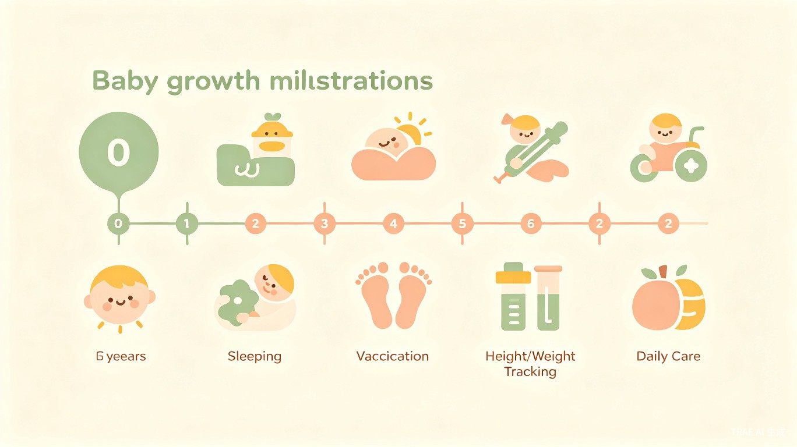

零负担记录 + AI 智能分析
一款为新手妈妈打造的宝宝成长管理 APP，让每一次喂养、每一晚睡眠、每一个成长瞬间都被温柔记录。
新手妈妈在母乳喂养和日常带娃中，有大量碎片化信息需要记录——喂奶时长、左右侧、睡眠、便便、疫苗等。但传统记录方式要么太麻烦、要么记不住，导致数据缺失、决策无依据。妈妈们迫切需要一种"零负担"的记录方式和智能化的成长管理工具。
我就是一位新手妈妈，亲身经历了从纸质表格 → 微信扣1 → 手动补录等一系列踩坑过程。每一次记录都是负担，每一份数据都散落各处。我想为自己、也为千万妈妈造一个真正好用的工具。
一款以"零负担记录 + AI智能分析"为核心的宝宝成长管理 APP，覆盖喂养、睡眠、便便、疫苗、身高体重、护理清单、每月训练等场景，并通过 AI 自动生成每周成长评价和趋势分析。
将每次喂养记录的操作从"多个步骤 + 事后回忆"压缩为"开始点一下、结束点一下"。无需切换应用，无需繁琐输入，在喂奶的同时就能完成记录。
喂养、睡眠、便便、疫苗等分散数据统一归集，一键生成趋势图表，妈妈无需手动统计即可掌握宝宝成长全貌。

0-2岁宝宝的新手妈妈，尤其是正在或准备进行母乳喂养的妈妈；同时关注宝宝日常护理和生长发育的全职或职场妈妈。
快速记录开始/结束时间、喂养哪一侧，单手即可完成操作
记录宝宝睡眠时长、便便次数和性状，养成规律作息
查看喂养趋势、睡眠规律，获取 AI 成长评价
查看已打疫苗清单、确认下一针时间，不再错过
打卡洗脸、洗澡、补充 AD 等事项，科学育儿不遗漏
只有打勾，一天喂了几次、每侧喂了多久要靠数行数，无法快速获取信息。
每天几百条消息，"扣1"记录像大海捞针，还要再转录到 App。
需要实时操作，切换应用/退出后数据容易丢失，记录变成额外负担。
喂养在 A 应用、身高体重在 B 应用、疫苗在 C 处，无法统一分析。
记录了数据却看不出趋势，不知道宝宝发育是否正常，焦虑无处安放。
将每次喂养记录的操作从"多个步骤 + 事后回忆"压缩为"开始点一下、结束点一下"，记录效率提升 80% 以上；同时将喂养、睡眠、便便、疫苗等分散数据统一归集，一键生成趋势图表，妈妈无需手动统计即可掌握宝宝成长全貌。

通过 AI 每周自动总结和趋势分析，帮助妈妈科学判断宝宝发育情况，减少"奶够不够""睡得好不好"的无谓担忧。
用"Vibe Coding"的亲身实践，向更多宝妈证明——不会写代码也能用 AI 为自己造工具，鼓励更多女性参与技术创造。
以极简记录替代繁琐手工统计，把妈妈的时间从"记数据"中解放出来，还给陪伴和休息。
母乳/奶粉喂养时长、左右侧记录，一键开始结束
记录入睡与醒来时间，分析睡眠规律与质量
次数、性状、颜色记录，关注宝宝消化健康
已打疫苗清单、下一针提醒，不再错过接种
生长曲线追踪，对比标准发育指标
洗脸、洗澡、补 AD 等日常护理打卡
适龄早教训练推荐，陪伴宝宝每一步成长
每周成长评价、趋势分析、智能建议
"每一位妈妈都值得被温柔对待，每一次成长都值得被认真记录。
萌芽记，让育儿更轻松，让爱更专注。"